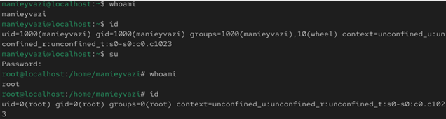
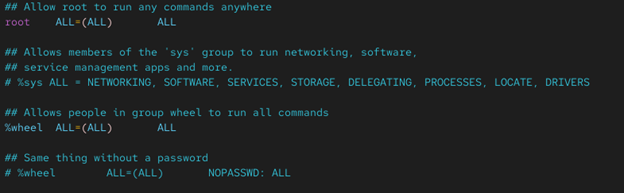
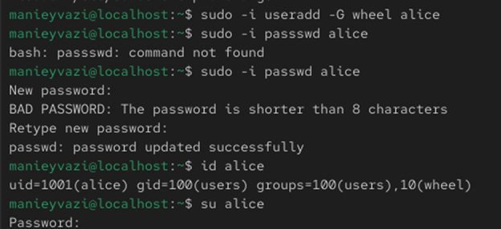
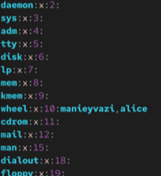
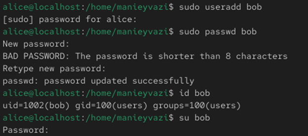
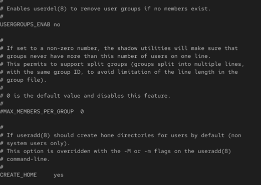
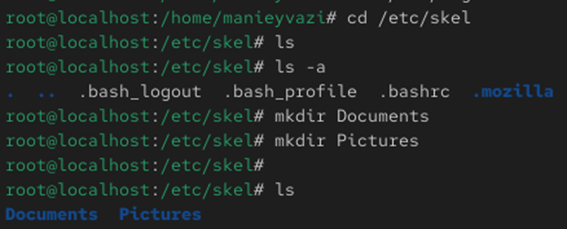
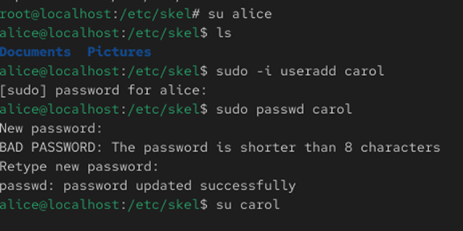
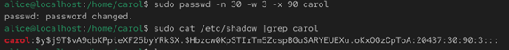

Получение практических навыков управления учётными записями пользователей и групп в операционной системе Linux.

Рис. 1 — Команды whoami и id
Рис. 1 — Переход к пользователю root

Рис. 2 — Открытие /etc/sudoers через visudo
-.

Рис. 3 — Создание пользователя alice
-.
Рис. 3 — Создание пользователя bob
-.

Рис. 4 — Файл /etc/login.defs
-.

Рис. 5 — Каталог /etc/skel
-.

Рис. 6 — Создание пользователя carol
Проверка работы системы.

Рис. 7 — Домашний каталог carol

Рис. 8 — Запись carol в /etc/shadow

Рис. 9 — Работа с группами
В ходе лабораторной работы были изучены основные механизмы управления
пользователями и группами в Linux.
Получены практические навыки создания учётных записей, настройки прав
доступа, управления паролями и группами, а также работы с ключевыми
системными конфигурационными файлами.